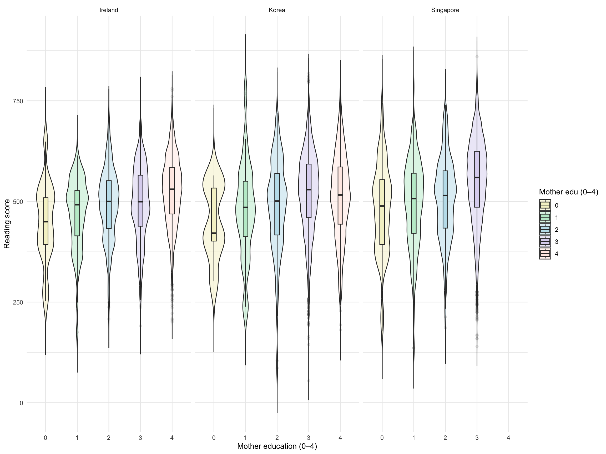
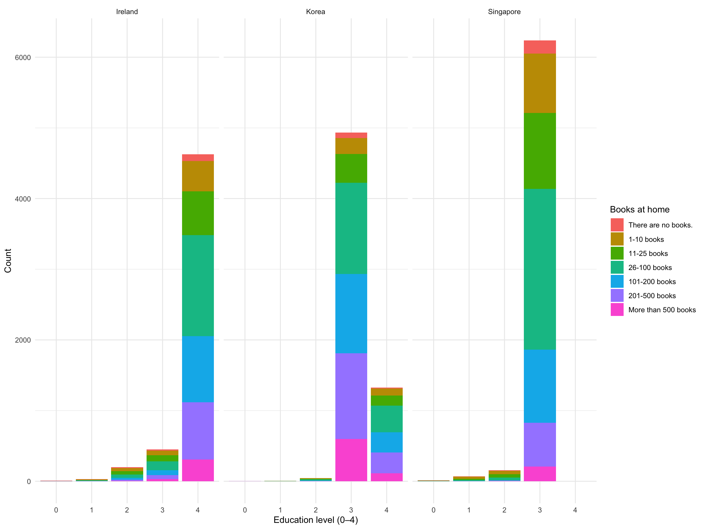
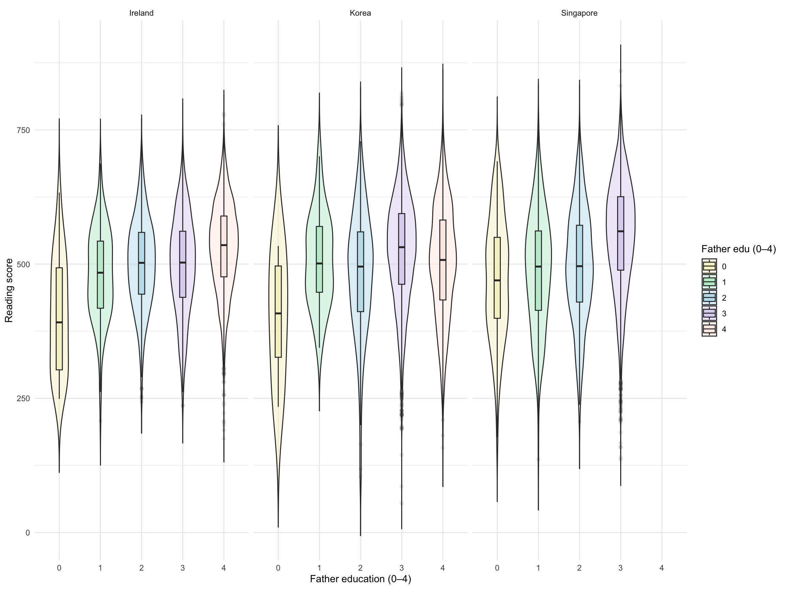
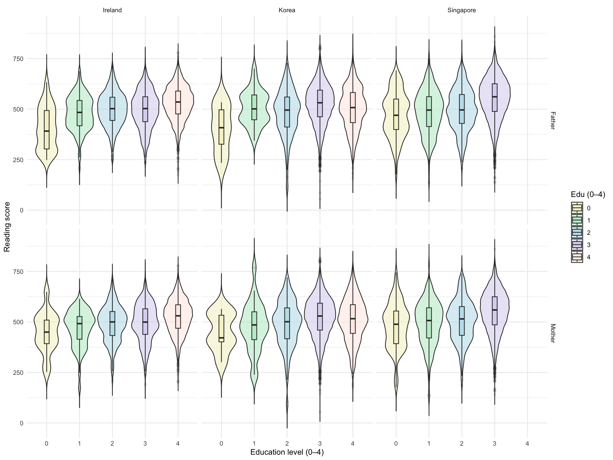
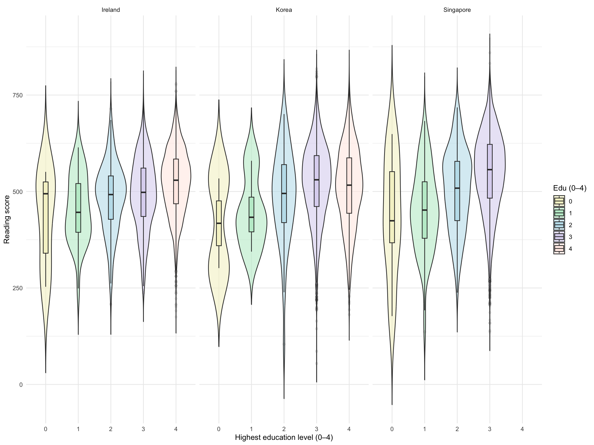

Parental Education and Children’s Reading Achievement
Students’ reading achievement is shaped by many factors, but family background remains one of the most important. In particular, parents’ educational level is often linked to children’s learning opportunities and academic performance. In this post, I explore the relationship between parental education and reading scores through a comparison of Ireland, Korea, and Singapore, asking whether students with more highly educated parents tend to achieve higher reading outcomes across different national contexts.
suppressPackageStartupMessages({
library(arrow)
library(colorspace)
library(ggpubr)
library(ggplot2)
library(ggrepel)
library(knitr)
library(tidyverse)})
opts_chunk$set(message = FALSE, warning = FALSE)
PISA_2022 <- read_parquet("/Users/k1765032/Library/CloudStorage/OneDrive-King'sCollegeLondon/QERKCL_PISA/data/pisa/2022/PISA_student_2022.parquet")
# select three max mean reading scores countries: Singapore, Korea, Ireland
max_mean_reading_score <- PISA_2022 %>%
group_by(CNT) %>%
summarise(mean_read = mean(PV1READ)) %>%
slice_max(mean_read, n = 3)
# no recording of Singapore's mother study level is <ISCED level 3.4>
new <- PISA_2022 %>%
filter(CNT == "Singapore", ST005Q01JA == "<ISCED level 3.4>")
mather_level<- PISA_2022 %>%
select(CNT, ST005Q01JA,ST255Q01JA, PV1READ) %>%
filter(!is.na(ST005Q01JA), !is.na(ST255Q01JA))%>%
filter( CNT == "Singapore"| CNT == "Korea" | CNT == "Ireland")%>%
mutate(
mather_edu_num = case_when(
ST005Q01JA == "<ISCED level 3.4>" ~ 4,
ST005Q01JA == "<ISCED level 3.3>" ~ 3,
ST005Q01JA == "<ISCED level 2>" ~ 2,
ST005Q01JA == "<ISCED level 1>" ~ 1,
ST005Q01JA == "She did not complete <ISCED level 1>." ~ 0,
ST005Q01JA %in% c("Valid Skip", "Not Applicable", "Invalid", "No Response") ~ -1,
TRUE ~ -1
))
father_level<- PISA_2022 %>%
select(CNT, ST007Q01JA,ST255Q01JA,PV1READ) %>%
filter(!is.na(ST007Q01JA), !is.na(ST255Q01JA))%>%
filter( CNT == "Singapore"| CNT == "Korea" | CNT == "Ireland") %>%
mutate(
father_edu_num = case_when(
ST007Q01JA == "<ISCED level 3.4>" ~ 4,
ST007Q01JA == "<ISCED level 3.3>" ~ 3,
ST007Q01JA == "<ISCED level 2>" ~ 2,
ST007Q01JA == "<ISCED level 1>" ~ 1,
ST007Q01JA == "He did not complete <ISCED level 1>." ~ 0,
ST007Q01JA %in% c("Valid Skip", "Not Applicable", "Invalid", "No Response") ~ -1,
TRUE ~ -1
))
#define colour
morandi5_plus <- c(
"0" = "#f5f2cd",
"1" = "#c0ecd0",
"2" = "#c0e1ec",
"3" = "#dcd6f0",
"4" = "#ffebe6"
)
ggplot(mather_level, aes(x = factor(mather_edu_num), y = PV1READ, fill = factor(mather_edu_num))) +
geom_violin(trim = FALSE, adjust = 0.6, width = 0.7,alpha = 0.5) +
geom_boxplot(width = 0.15, outlier.alpha = 0.1) +
facet_wrap(~ CNT) +
labs(x = "Mother education (0–4)", y = "Reading score") +
scale_fill_manual(values = morandi5_plus, name = "Mother edu (0–4)") +
theme_minimal()
Coding parental education
To make parental education easier to compare, I recoded both maternal and paternal education into a five-category scale, ranging from 0 (“did not complete ISCED level 1”) to 4 (“ISCED level 3.4”). Figure 1 presents mothers’ and fathers’ education separately for Ireland, Korea, and Singapore. Across all three countries, higher parental education is generally associated with higher reading scores. Showing fathers and mothers separately is useful because it highlights whether the relationship follows a similar pattern for each parent, while also allowing for clearer cross-country comparison.
A simplified comparison
Figure 2 compares students’ reading scores using the highest level of parental education within the family. Across Ireland, Korea, and Singapore, students from families with higher parental education generally achieve higher reading scores, although the size of this difference varies across countries.
suppressPackageStartupMessages({
library(arrow)
library(colorspace)
library(ggpubr)
library(ggplot2)
library(ggrepel)
library(knitr)
library(tidyverse)
})
opts_chunk$set(message = FALSE, warning = FALSE)
books_edu<- PISA_2022 %>%
select(CNT, ST005Q01JA,ST007Q01JA,ST255Q01JA,PV1READ) %>%
filter(!is.na(ST005Q01JA), !is.na(ST255Q01JA), !is.na(ST007Q01JA))%>%
filter( CNT == "Singapore"| CNT == "Korea" | CNT == "Ireland")%>%
mutate(
mother_edu_num = case_when(
ST005Q01JA == "<ISCED level 3.4>" ~ 4,
ST005Q01JA == "<ISCED level 3.3>" ~ 3,
ST005Q01JA == "<ISCED level 2>" ~ 2,
ST005Q01JA == "<ISCED level 1>" ~ 1,
ST005Q01JA == "She did not complete <ISCED level 1>." ~ 0,
ST005Q01JA %in% c("Valid Skip", "Not Applicable", "Invalid", "No Response") ~ -1,
TRUE ~ -1
),
father_edu_num = case_when(
ST007Q01JA == "<ISCED level 3.4>" ~ 4,
ST007Q01JA == "<ISCED level 3.3>" ~ 3,
ST007Q01JA == "<ISCED level 2>" ~ 2,
ST007Q01JA == "<ISCED level 1>" ~ 1,
ST007Q01JA == "He did not complete <ISCED level 1>." ~ 0,
ST007Q01JA %in% c("Valid Skip", "Not Applicable", "Invalid", "No Response") ~ -1,
TRUE ~ -1),
parent_edu_max = pmax(mother_edu_num, father_edu_num),
parent_edu_min = pmin(mother_edu_num, father_edu_num)
)
ggplot(books_edu, aes(x = factor(parent_edu_max), fill = ST255Q01JA)) +
geom_bar(position = "stack") +
facet_grid(~ CNT) +
labs(x = "Education level (0–4)", y = "Count", fill = "Books at home") +
theme_minimal()
Parental Education and Home Literacy Resources
Figure 3 explores the association between the highest parental education level in the household and the number of books at home. In general, higher parental education is linked to a greater number of books, which may reflect differences in home literacy resources across families.
ggplot(father_level, aes(x = factor(father_edu_num), y = PV1READ, fill = factor(father_edu_num))) +
geom_violin(trim = FALSE, adjust = 1, width = 0.7,alpha = 0.5) +
geom_boxplot(width = 0.15, outlier.alpha = 0.1) +
facet_wrap(~ CNT) +
labs(x = "Father education (0–4)", y = "Reading score") +
scale_fill_manual(values = morandi5_plus, name = "Father edu (0–4)") +
theme_minimal()
edu_long <- bind_rows(
mather_level %>%
transmute(CNT, parent = "Mother", edu_num = mather_edu_num, PV1READ),
father_level %>%
transmute(CNT, parent = "Father", edu_num = father_edu_num, PV1READ)
)
ggplot(edu_long, aes(x = factor(edu_num), y = PV1READ, fill = factor(edu_num))) +
geom_violin(trim = FALSE, adjust = 0.7, width = 0.95, alpha = 0.6) +#adjust = 1, width = 0.7, alpha = 0.5
geom_boxplot(width = 0.15, outlier.alpha = 0.1) +#fill = "white"
facet_grid(parent ~ CNT) +
labs(x = "Education level (0–4)", y = "Reading score", fill = "Edu (0–4)") +
scale_fill_manual(values = morandi5_plus) +
theme_minimal()
ggplot(books_edu, aes(x = factor(parent_edu_max), y = PV1READ, fill = factor(parent_edu_max))) +
geom_violin(trim = FALSE, adjust = 1, width = 0.95, alpha = 0.6) +#adjust = 1, width = 0.7, alpha = 0.5
geom_boxplot(width = 0.15, outlier.alpha = 0.1) +#fill = "white"
facet_grid(~ CNT) +
labs(x = "Highest education level (0–4)", y = "Reading score", fill = "Edu (0–4)") +
scale_fill_manual(values = morandi5_plus) +
theme_minimal()
Limitations
There are also some limitations worth keeping in mind. Parental education is only one dimension of family background. It does not directly measure household income, occupation, cultural capital, or specific literacy practices. In addition, using the highest parental education level is analytically practical, but it compresses more complex family situations into a single number. Finally, the analysis here is descriptive: it identifies an association, but it does not on its own demonstrate causation.
Conclusion
Overall, this analysis shows a clear and meaningful pattern: higher parental education is associated with higher children’s reading scores. This relationship is visible across Ireland, Korea, and Singapore, suggesting that parental education is an important dimension of educational inequality across different national contexts. At the same time, the wide variation within groups reminds us that parental education is not the only factor shaping reading achievement.